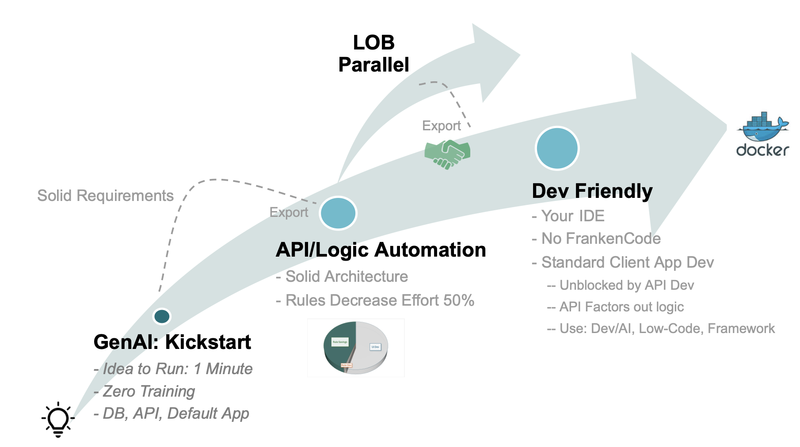
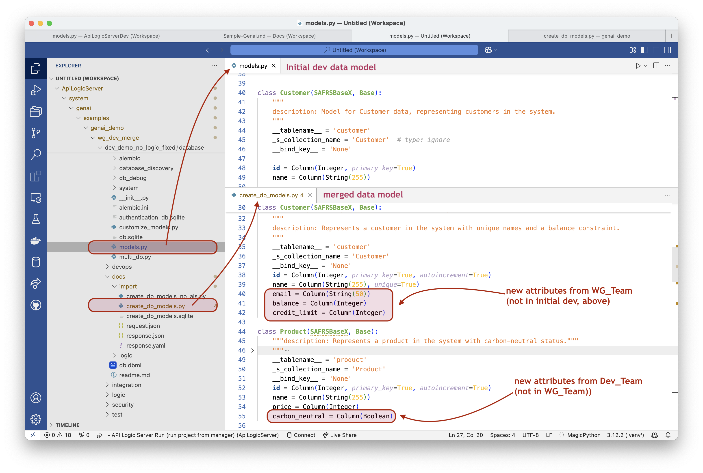

Import / Merge WebGenai
 TL;DR - Import WebGenAI Project
TL;DR - Import WebGenAI Project
You can import WebGenAI projects, merging their data models and rules into a dev project.
als genai-utils --import-genai --using=<WebGenAI-Project>
Coordinating Parallel Dev Streams (Multi-Team Development)
This is the Diego Lo Giudice challenge: enable ongoing parallel development with both the LOB and Dev teams. It's enabled by declarative technology, where the integration is done with software, not manual effort.
It works like this:
-
The project begins with the Kickstart: several iterations to get solid requirements.
- Uses Natural Language and Declarative Rules
-
The project is exported: the Dev Team begin work on the Custom UI, Enterprise Integration, etc
- This is not the end of declarative: logic is either or both of Natural Language, and Python DSL
-
As depicted in the divergent arcs: there are now 2 versions of the project. Both can, in parallel, introduce new rules and attributes. This is not just "Team Development", it is TeamS Development.
- LOB Parallel: (WG_Team): new rules & attributes
- Observe: WG is not a day-1-only pilot...
- They continue to use the Natural Language Web-Based interface (WebGenai)
- Dev_Team: their own new rules & attributes, using either genai Natural Language and/or alembic...
- In addition, the server team also uses Python (and) and libs as required, e.g. for enterprise integration.
- They do this in their favorite IDE, with tools such as GitHub etc.
- Observe the logic remains at a high lev
- The UI team can use familiar tools for Custom UIs. These
- leverage the API (ready day 1, so they are not blocked on API Dev), and
- are dramatically simplified by automated backend rule-based logic
- In addition, the server team also uses Python (and) and libs as required, e.g. for enterprise integration.
- LOB Parallel: (WG_Team): new rules & attributes
-
Export 2: illustrates that the LOB WG_Team can export their project. The dev team can import it using the API Logic Server CLI.
- This automatically integrates rules and attributes from both projects, updating the dev project with a new database and models.
- This is virtually impossible with procedural code, because developers must manually assess the execution dependencies and order the logic properly. It time-consuming, complex, and error-prone - just like post deployment maintenance.
- The integration is automatic and "safe" because logic is expressed in a declarative rules/models for which ordering is automatic.
- It also rebuilds the test data, per your rules (e.g. sum/count values)
- The process supports multiple exports.
- This automatically integrates rules and attributes from both projects, updating the dev project with a new database and models.

Exploring Import
Setup: Manager pre-installs Import Sample
When you create the manager (strongly recommended), the system installs 3 sample projects you can use to explore import.
-
Base Project is GenAI_no_logic. No rule-based attributes. See
system/genai/examples/genai_demo/wg_dev_merge/base_genai_demo_no_logic. It's not really used, just provided as a reference. -
Dev Project was created with export-1, and has added rules for
carbon_neutral. It is ready for export-2. Seesystem/genai/examples/genai_demo/wg_dev_merge/dev_demo_no_logic_fixed -
WG project has continued from export-1 to add our standard customer.balance rules. It is ready for export-2. See
system/genai/examples/genai_demo/wg_dev_merge/wg_demo_no_logic_fixed.- It has an
docs/export/export.json, which describes the data model and rules from the WG project. This is used for import.
- It has an
The naming convention is that these started with no rules, had rules added, and were "fixed" by Genai-Logic to update the data model.
Usage
Imports are performed from with the dev project, using the import-genai CLI command:
cd system/genai/examples/genai_demo/wg_dev_merge/dev_demo_no_logic_fixed
als genai-utils --import-genai --using=../wg_demo_no_logic_fixed
Customer.balance and Product.carbon_neutral
2. The test data has been updated to include these attributes, with proper values
In this example, als genai-utils --import-genai ... will leave things in this state:

The import-genai command creates the docs/import directory and the following files, as shown above:
request.jsonis sent to ChatGPT. It contains both models, and a command to merge themresponse.jsonis the merged model. It should reflect the attributes from both sides, as shown- The response is translated to
system/genai/examples/genai_demo/wg_dev_merge/dev_demo_no_logic_fixed/docs/import/create_db_models.py - The system creates
docs/import/create_db_models.py/create_db_models.sqliteby executing the file above. - The system then uses this to update the dev project:
- update the dev
database/db.sqliteand - Runs
--rebuild-from-database. This updates the model, the api, etc from the new database. - It's good practice to verify these. Make sure all the attributes from both sources are reflected in the updated database and models noted above.
- update the dev
Restart option for failure recovery
It may fail, requiring either a re-run or an import-resume:
-
Re-run is indicated if the data model is missing attributes, incorrect or imcomplete.
- make sure to get initial
system/genai/examples/genai_demo/wg_dev_merge/dev_demo_no_logic_fixed/database/models.py(eg, update from models_for_resume.py) - delete or rename the
docs/importdirectory.
- make sure to get initial
-
import-resumecan be used if you can repair the file below, e.g., a minor syntax error.- fix
system/genai/examples/genai_demo/wg_dev_merge/dev_demo_no_logic_fixed/docs/import/create_db_models.py- Note: you can run this standalone with your IDE to verify it. It should create
create_db_models.sqlitein yourdocs/importdirectory.
- Note: you can run this standalone with your IDE to verify it. It should create
- make sure to get initial system/genai/examples/genai_demo/wg_dev_merge/dev_demo_no_logic_fixed/database/models.py (eg, update from models_for_resume.py)
- fix
cd system/genai/examples/genai_demo/wg_dev_merge/dev_demo_no_logic_fixed
als genai-utils --import-genai --using=../wg_demo_no_logic_fixed --import-resume
Appendices
Ground Rules
- No Dev_Team -> WG_Team integration (just deploy Dev_Team version, and use)
- Dev team code cannot be integrated into WG - dependencies, libs, integration, ...
- WG_Team - serial dev (as now)
- WG_Team logic files are separate from Dev_Team (eg, using logic/discovery)
- sqlite only, for now (presume upgrade to 'some other db' is doable later)
- Tyler, what were the issues you mentioned in sqlite that forced you to use PG?
- All Dev_Team and logic generations are finished before merge-G